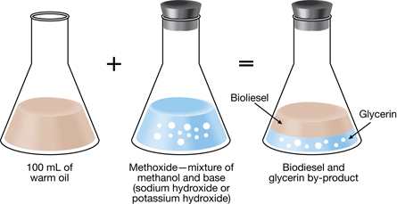

Biodiesel is an alternative fuel that is made from vegetable and animal oils. It can be used directly in diesel vehicles or blended with traditional petroleum diesel. You will discover during this lab how easy it is to make and store biodiesel. The chemical reaction to produce biodiesel is as follows:
Materials
Safety
Procedure
Note: Biodiesel is made using three main components: oil, alcohol, and a base catalyst. This procedure provides a variety of alternative materials that you could use to produce the biodiesel. Your teacher will direct you to which materials you will be using.
Step 1: Measure out 100 mL of oil using a graduated cylinder, and pour the oil into one of the Erlenmeyer flasks.
Step 2: Record observations of colour, viscosity, clarity, and other aspects of the appearance of the starting material (oil).
Step 3: Check that the temperature of the water bath is between 40°C and 65°C. Place the Erlenmeyer flask containing the oil sample into the water bath.
Step 4: While your oil is warming, measure out 20 mL of methanol using a 50-mL graduated cylinder, and pour the methanol into a second Erlenmeyer flask.
Step 5: To the Erlenmeyer flask containing the methanol, add ONE of the following: 15 mL of 1.0 mol/L NaOH(aq) solution, 15 mL of KOH(aq) solution, 0.6 g of NaOH(s), or 0.9 g of KOH(s). Swirl your mixture of methanol and base gently to mix. This mixture is called methoxide.
Step 7: Stir, swirl, or stopper and gently shake the mixture for several minutes. The mixture will become cloudy and turn a milky colour. A stopper or aluminum foil can be used on the flask to control fumes.
Step 8: If the reaction is successful, you should start seeing two layers developing inside the flask. The heavier glycerin will start to settle to the bottom soon after you stop mixing the reactants. The biodiesel will be in the upper layer. The biodiesel varies in colour depending on the oil used. This will take at least an hour, but longer is better. The mixture should sit overnight to completely react.

Collecting Biodiesel (best completed the next day)
Step 9: Use a disposable pipette or a turkey baster to carefully remove the top layer, containing the biodiesel, from the Erlenmeyer flask and move the biodiesel to a clean graduated cylinder.
Step 10: Record the volume of the biodiesel transferred from the Erlenmeyer flask.
Step 11: Record observations of colour, viscosity, clarity, and other aspects of the appearance of the starting material (oil) and the product (biodiesel) collected.
Step 12: Place the biodiesel into an appropriately labelled container. Ensure that the contents of the container are identified, and add an appropriate WHMIS label, your name, and today’s date.
Note: This is crude biodiesel and is NOT of a high enough quality to be put directly into a vehicle. In industrial processes, it must go through a process called “washing” to remove excess glycerin, base, and alcohol.
Burning the Biodiesel (your teacher may demonstrate this step)
Step 13: Biodiesel can be safely used in spirit burners. Pour some of your biodiesel into a spirit burner. Once the biodiesel has soaked up the wick, light the wick of the spirit burner. If the biodiesel does not soak up the wick, use the pipette to place a few drops on the wick. Record your observations.
Step 14: Try burning the unreacted oil and the methanol in other spirit burners. For each different fuel tested, record your observations.
Step 15: Store the remainder of the biodiesel in an appropriate container labelled with your name. This may be used for Part 2 of this project.